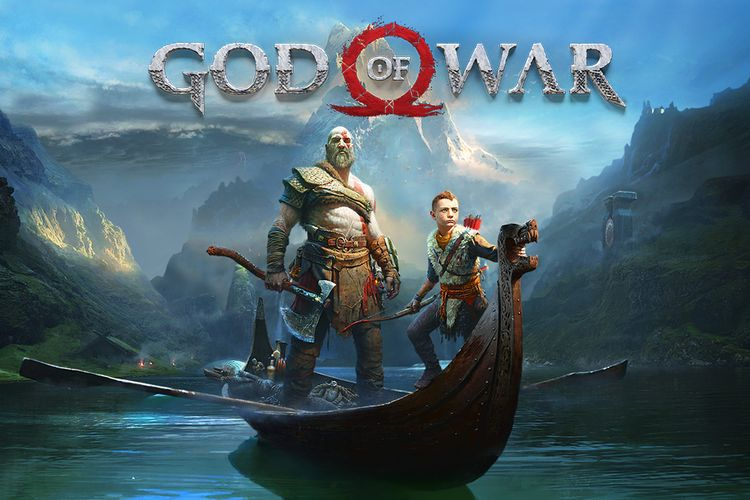
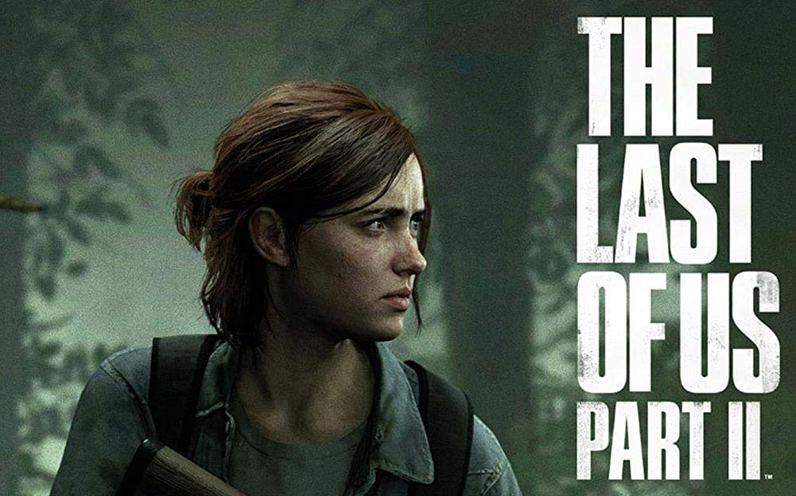
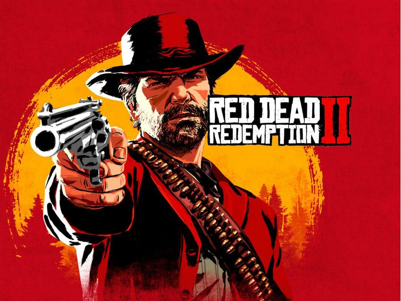

Pastinya, ada banyak game yang dianggap memiliki kualitas tinggi dalam berbagai aspek seperti grafis, gameplay, penceritaan, dan pengalaman secara keseluruhan. Berikut beberapa contohnya:
The Legend of Zelda: Breath of the Wild

Game yang dikembangkan dan diterbitkan oleh Nintendo ini secara luas dianggap sebagai salah satu game terhebat sepanjang masa. Ini menampilkan grafik yang memukau, lingkungan dunia terbuka yang luas, mekanisme permainan yang menarik, dan cerita yang kaya dan imersif.
God of War

Dikembangkan oleh Sony Santa Monica, game ini menampilkan visual yang memukau, kisah yang dalam dan emosional, serta mekanisme pertempuran yang memikat. Ini secara luas dianggap sebagai salah satu game aksi-petualangan terbaik yang pernah dibuat.
The Last of Us Part II

Dikembangkan oleh Naughty Dog dan diterbitkan oleh Sony Interactive Entertainment, game ini menampilkan grafis yang memukau, gameplay yang intens, serta kisah yang mencekam dan emosional. Itu telah memenangkan banyak penghargaan untuk kualitasnya dan secara luas dianggap sebagai salah satu game terbaik tahun 2020.
Half-Life: Alyx

Game realitas virtual yang dikembangkan oleh Valve Corporation ini telah menerima pujian kritis atas grafisnya yang inovatif dan mekanisme permainan yang imersif. Ini secara luas dianggap sebagai salah satu game VR terbaik yang pernah dibuat.
Red Dead Redemption 2

Dikembangkan dan diterbitkan oleh Rockstar Games, game ini menampilkan grafik yang memukau, lingkungan dunia terbuka yang imersif, dan mekanisme permainan yang memikat. Kisahnya telah dipuji secara luas karena dampak emosional dan pengembangan karakternya.
Ini hanyalah beberapa contoh game yang secara luas dianggap memiliki kualitas tinggi. Setiap game memiliki kekuatan dan aspek uniknya sendiri yang menjadikannya pengalaman hebat bagi para pemain.